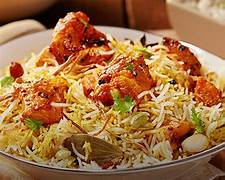
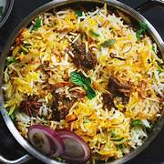
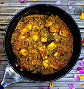
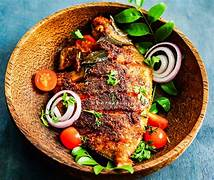
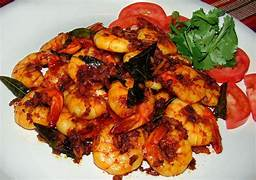
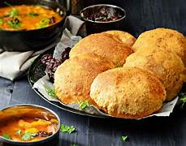

<!DOCTYPE html>
<html></html>
<head>
    <title>Nagendra</title>
    <style>
        table{
           border-collapse: collapse;
        }
    </style>
   
   
</head>
<style>
    body{background-color: burlywood;}
</style>
<body>
    
    <h1 align="center">MENU FOR REDDY SHEKAR RESTAUARANT</h1></body><hr>
    <center>
    <table border="4">
       <tr>
        <td><b>s.no</b></td>
        <td><p><b>non-veg items</B></p></td>
        <td><p><b>s.no</b></p></td>
        <td><p><b>veg</b></p></td>
       </tr>
        <tr>
            <td><b>1.</b></td>
            <td>chicken biryani
                <p><b>price-250</b><a href="https://www.indianhealthyrecipes.com/chicken-biryani-recipe/">
                    </a></p>
                
            </td>
            <td><b>1.</b></td>
            <td>gobi rice
                <p><b>price-100</b><a href="https://www.tastesofmalabar.com/recipe/gobi-fried-rice/">
                </a></p>
           </td>
        </tr>
        <tr>
            <td><b>2.</b></td>
            <td>Mutton biryani
                <p><b>price-300</b></p><a href="https://food.ndtv.com/recipe-mutton-biryani-339364">
                 
            </a></td>
            <td><b>2.</b></td>
            <td>
                Paneer
                <p><b>price-250</b><a href="https://www.indianhealthyrecipes.com/paneer-recipes/">
                    
                </a></p>
            </td>
        </tr>
        <tr>
            <td><b>3.</b></td>
            <td>Fish fry
                <p><b>price-250</b></p>
                <a href="https://recipes.timesofindia.com/recipes/fish-fry/rs53095021.cms">
                    
                </a>
            </td>
            <td><b>3.</b></td>
            <td>
                Buternon
                <p><b>price-250</b></p>
                <a href="https://recipes.timesofindia.com/recipes/fish-fry/rs53095021.cms">
                    
                </a>
            </td>
        </tr>
        <tr>
            <td><b>4.</b></td>
            <td>
                frawns fry
                <p><b>prcice-300</b></p>
                <a href="https://yummyindiankitchen.com/prawn-fry-recipe-how-to-make-prawn-fry/">
                    
                </a>
            </td>
            <td><b>4.</b></td>
            <td>
                poori
                <p><b>price-100</b></p>
                <a href="https://www.vegrecipesofindia.com/poori-a-kind-of-fried-indian-bread/">
                    
                    
                </a>
            </td>
        </tr>
    </center>
    
        </table>
       <br><center><a href="./Task1.html"><b>Home</b></a>
   
</body>